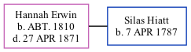

, the wife of Silas Hiatt (the fifth times great-uncle of Jay Hannah), was born c. 1810. She married Silas in White Water MM, Wayne Co., IN on Oct 31, 1839.
She died on Apr 27, 1871.
Family Tree

Generated by ged2site. Last updated on Jun 13, 2024